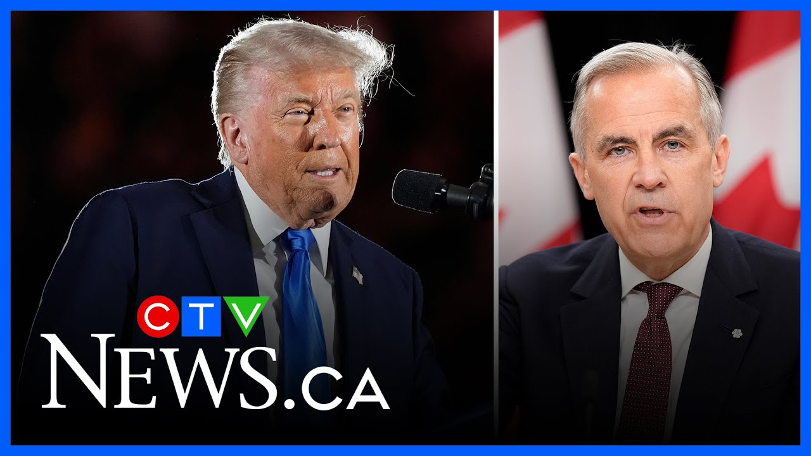

来B站一起耍【Global每日英语简报】
【马克·卡尼谈论即将与特朗普举行的会议】
Summary: PM Mark Carney addresses questions about Trump's stance on Canada becoming the 51st state and emphasizes Canada's strength and priorities in upcoming negotiations.
摘要： 马克·卡尼回应了特朗普关于加拿大应成为第51个州的立场，并强调了加拿大在即将到来的谈判中的实力和优先事项。

⏱️ Estimated Reading Time: 6 min
In your second call with the president, uh, did Mr. Trump outright say or insinuate at any point that Canada should become the 51st state?
在您与总统的第二次通话中，特朗普先生是否直接说过或暗示过加拿大应该成为第51个州？
He did not.
他没有。
All right.
好的。
Um, we've heard Mr. Trump on April 23rd and his surrogates throughout the final days of the campaign reiterate the idea that they believe Canada should become the 51st state on the campaign trail.
嗯，我们在4月23日听到特朗普先生及其代理人在竞选最后几天反复强调他们认为加拿大应该成为竞选活动中的第51个州。
You said on multiple occasions that respect for Canada would be one of the key things in terms of having a meeting with him.
您多次表示，尊重加拿大将是与他举行会议的关键之一。
Do you think over the past few days we have seen respect for Canada from the Trump administration?
您认为过去几天我们看到特朗普政府对加拿大的尊重了吗？
Look, the I would um I it's always important to distinguish want from reality, right?
听着，我认为区分愿望与现实总是很重要的，对吧？
What someone wants and what is reality and what the can what the Canadian people clearly have stated virtually without exception is this will never ever happen.
某人的愿望与现实是什么，以及加拿大人民几乎无一例外明确表示的是，这永远不会发生。
And if uh any of the leaders of the party and and their representatives would attest to that, I think the votes attest to it.
如果党的任何领导人和他们的代表会证明这一点，我认为投票也会证明这一点。
I think the public dialogue attests to it as well.
我认为公众对话也证明了这一点。
Uh and we are, you know, we're meeting as uh as heads of our government um to discuss that partnership.
嗯，我们正在以政府首脑的身份会面，讨论这种伙伴关系。
Now, I'm I'm not pretending those discussions will be easy or uh they won't proceed in a straight line.
现在，我并不假装这些讨论会很容易，或者它们不会一帆风顺。
There will be zigs and zags, ups and downs.
会有曲折，有起伏。
Um uh but as I said in my remarks, I will I will fight for the best deal for Canada and only accept the best deal for Canada and take as much time that's necessary.
嗯，但正如我在讲话中所说，我将为加拿大争取最好的协议，只接受对加拿大最有利的协议，并花必要的时间。
Davis Lere, I apolog.
戴维斯·莱尔，我道歉。
Hi, thanks for taking our questions.
你好，谢谢回答我们的问题。
Just one for me to try and squeeze some more reporters in.
我只问一个问题，以便让更多记者有机会提问。
But to my colleagueu's point, the White House's public position has continued to be that Canada should be the 51st state.
但正如我同事所说，白宫的公开立场一直是加拿大应该是第51个州。
You yourself have said that that Donald Trump is trying to break Canada.
您自己也说过唐纳德·特朗普试图分裂加拿大。
Considering all that, how can you expect good faith negotiations when you travel to Washington next week?
考虑到所有这些，您下周前往华盛顿时如何期待真诚的谈判？
Look, I think the um first I've had the direct conversation with him uh on whatever day it was, Tuesday, I guess it was a couple of days ago.
听着，我认为首先我和他进行了直接对话，大概是几天前的周二。
Um and we agreed to have those uh negotiations, very clear discussion between us, as I said, very constructive.
嗯，我们同意进行这些谈判，非常明确的讨论，正如我所说，非常有建设性。
Um and um I would say the time allocated to our meeting and the seniority of the I mean he's the president so that's as senior as you get but uh the other uh members of his administration who will be assisting uh at at those meetings suggests the seriousness of the discussions.
嗯，我认为分配给我们的会议时间以及与会者的级别——他是总统，所以级别最高——但他的政府其他成员将协助这些会议，这表明了讨论的严肃性。
Again we are not do not expect white smoke uh out of that meeting.
我们并不期待会议会立即取得成果。
There'll be white smoke probably later somewhere else uh in the world uh this month.
本月晚些时候可能在世界上其他地方会有成果。
Uh but do not expect that.
但不要期待这一点。
But uh so that's the first thing is just the level of you know the direct dialogue the discussion the level of uh uh of people there.
但首先，这是直接对话的级别，讨论的级别，与会者的级别。
Um the second point I'll make it quickly and thank you for restricting the question so others can get in is that um he respects as uh as as others who are good negotiators and he's one of the best negotiators they respect strength.
嗯，我要快速提出第二点，感谢您限制问题以便其他人可以提问，那就是他尊重像其他优秀谈判者一样的人，他是最优秀的谈判者之一，他们尊重实力。
That's why we're building Canada strong.
这就是为什么我们要建设强大的加拿大。
There's lots of reasons to build Canada strong, but the point is, and I will make this point repeatedly, we have more than enough to do here at home.
建设强大的加拿大有很多理由，但关键是，我将反复强调这一点，我们在国内有足够多的事情要做。
That point about we can give ourselves more than the Americans can take away is absolutely right.
关于我们可以给自己比美国人能拿走的更多这一点是完全正确的。
We can pro we can have a bigger boost to our economy, to incomes, to jobs by focusing on building one Canadian economy, by building these nation building uh projects, by focusing on getting productivity up, by reducing government waste, by driving investment in this country.
我们可以通过专注于建设一个加拿大经济、建设这些国家建设项目、专注于提高生产力、减少政府浪费、推动国内投资，为我们的经济、收入和就业带来更大的提升。
And so that is a good in and of itself.
这本身就是一件好事。
We're going to focus on that while we have these negotiations with the Americans.
在与美国人进行这些谈判的同时，我们将专注于这一点。
And if the negotiations with the Americans take longer, so be it.
如果与美国人的谈判需要更长时间，那就这样吧。
Um, we've got more than enough to do.
嗯，我们有足够多的事情要做。